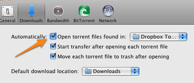
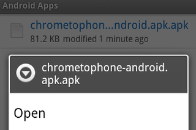
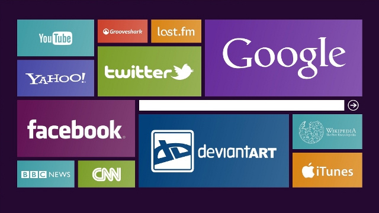
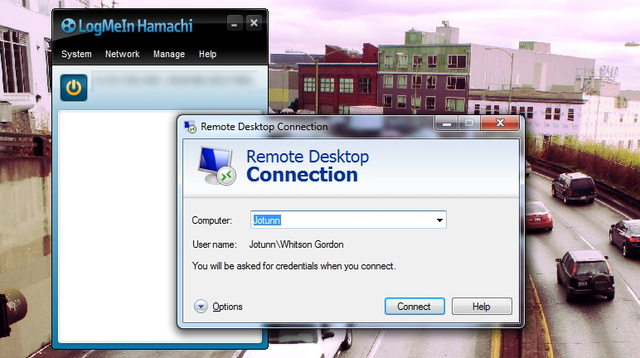

Dropbox is an awesome service. You can back your files up to the cloud, sync them between computers, and share them with your friends. That's not all it can do, though. Here are our top 10 favorite clever uses for our favorite file syncing program.
Note: If you don't use Dropbox, don't fret—you can do most of these things with any file syncer you want, whether it's SkyDrive, Google Drive, Cubby, or something else.
10. Monitor Your Computer for Running Tasks or Unauthorized Access

If you're at work and want to keep an eye on your home machine—whether it's keeping track of a download or making sure someone else isn't trying to use it—you can do that with Dropbox. All you need is a screenshot tool (like one of our favorites) and some way to automate it (like this AutoHotkey script). Then, just periodically check your Dropbox folder, and you'll have a chronological timeline of everything happening on your screen at home. You can also use Dropbox to check your home computer's IP from afar, and even locate your laptop if its been stolen.
9. Securely Share Files, from Saucy Pics to Paperwork

We all know Dropbox is great for sharing files, but it's particularly good for sensitive information, like tax returns, passwords, or saucy photos (note: saucy photos not recommended). Dropbox encrypts everything you upload, and downloads it over a secure HTTPS connection, meaning that file is secure from start to finish. Of course, you can also encrypt it in a ZIP file first for extra protection, too. Just don't be reckless!
8. Manage Your BitTorrent Downloads

Most BitTorrent clients have handy web interfaces that let you add, monitor, and remove torrents from afar, but a simple alternative is to just use Dropbox. Just tell your BitTorrent client to watch a specific folder in your Dropbox for new torrents. Then, when you're away and find a cool torrent you want, just copy that torrent to your designated Dropbox folder. It'll sync back to your house, get recognized by your client, and start downloading for you.
7. Quickly Install Android Apps and ROMs

The Google Play store is great, but sometimes you find an app that you need to install yourself using an APK file. Or, maybe you're flashing a new ROM to your phone and trying something completely different. Either way, you don't need to plug your phone in via USB—you can just drag that APK or ZIP file to your Dropbox, then download it using the Dropbox app on your phone (or install it right then and there). In the case of smaller files, it's much faster than finding your USB cable.
6. Print Documents to Your Home Printer from Any Computer
If you have a document you want printed back at home, Dropbox can make it happen. All you need is a script running at home that monitors a Dropbox folder for incoming documents and prints them. Then, you can add a document to that folder from any remote computer or smartphone, and a hard copy will be waiting for you when you get back. You can check out the cross-platform script here, though we've also written a simpler Mac-specific tutorial here as well.
5. Host a Web Site or Start Page for Your Browser

So you've built your first web site, and now you're looking for somewhere to host it. You can actually host it for free right in your Dropbox—either manually or with a service like DropPages. This trick is also handy for syncing your custom start page across your systems, so you have it everywhere you go—whether it's one you created yourself or one of the many we've featured here before.
4. Create Your Own Cloud-Based Music Library
Not satisfied with the other cloud music services out there? You can use Dropbox to sync your entire music library between computers and up to the cloud, so it's the same everywhere. Then you can play that music when you're away from home using a web player like DropTunes or a smartphone app like BoxyTunes. Note that this one requires a significant amount of space, so if you only have a few gigs, make sure you check out our cheapskate's guide to free Dropbox storage.
3. Launch Applications and Run Commands on Your Home Computer
SExpand
Similar to the remote printing method, you can also run applications and commands on your home computer with a clever setup in Dropbox. We've shown you how to do it with Windows and AutoHotkey, but Dropbox also has a tutorial for Linux users, which is pretty handy. It's perfect for starting up your favorite remote desktop program so you can get full control of your computer from afar.
2. Convert, Share, and Automate Your Files
One of the coolest ways to take advantage of Dropbox is to use a tool like Dropbox Automator or Wappwolf to automate the files inside. With those apps, you can convert an image just by dropping it in a Dropbox folder, or send a PDF to your Kindle. Heck, you can even tell it to upload all your synced photos to Facebook or Flickr. Check out our full tutorial on Wappwolf for more information.
1. Keep the Same Apps, Settings, and Passwords on All Your PCs
If you have multiple computers, Dropbox is a great way to keep important files available at all times. But, it's also great for keeping all your favorite apps readily available, and with the same settings across each PC. Portable Apps are the best way to do this, since they keep all their settings in one neat little folder, and you can sync them between all your computers. But, you can also sync your settings separately, whether it's a custom Microsoft Word dictionary, Your Firefox and Pidgin profiles, multiple Rainlendar calendars, or anything else. You can even use Dropbox as the ultimate password syncer, keeping your passwords safe, secure, and available wherever you are.